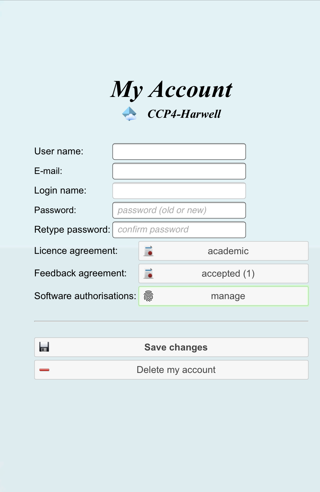

2.1. My Projects¶
2.1.1. First Time¶
This is the first page you see after logging in. If this is your first time using CCP4 Cloud, you have likely logged in with a temporary password sent after registration. Although the temporary password does not expire, you may want to change it to something memorable.
To update your password:
1. Click the Menu icon:  in the top-left corner of the page.
2. Select “My Account” from the dropdown menu.
3. Enter your new password in the account settings and press “Update my account”.
in the top-left corner of the page.
2. Select “My Account” from the dropdown menu.
3. Enter your new password in the account settings and press “Update my account”.
Once updated, you will be redirected to the CCP4 Cloud home page, where you can log in with your new password.
2.1.2. Software Authorisation¶
CCP4 Cloud integrates certain third-party software that requires user authorisation from the respective software provider. You can manage authorisations on the “My Account” page.
{kind=link}
To authorise: 1. Click the manage button to access the authorisation page. 2. This page provides a summary of your authorisations and allows you to send authorisation requests.
{kind=link}
Note
Authorisation requests will redirect you to the software provider’s website. Any data provided is processed directly by the provider and is not stored in CCP4 Cloud.
2.1.3. Projects¶
In CCP4 Cloud, your work is organised into Projects. While there are no strict rules for their usage, a common approach is to create a separate project for each protein. Projects typically follow a workflow:
- Data Processing
- Phasing (MR or EP)
- Density Modification
- Model Building
- Refinement
- Validation and Deposition
2.1.4. Getting Started¶
Initially, the project list will be empty. To create your first project:
1. Click the  button above the list.
2. In the dialog that appears, provide a short project name and a descriptive title (e.g., “Project A - Initial Refinement”).
button above the list.
2. In the dialog that appears, provide a short project name and a descriptive title (e.g., “Project A - Initial Refinement”).
{kind=link}
- Press to add the new project to the list.
The project list can be sorted using column title controls and is selectable. To open a project:
- Select it and click the  button above the list, or
- Double-click the project line.
button above the list, or
- Double-click the project line.
To delete a project:
1. Select the project in the list.
2. Click the  button. Note: Deleted projects cannot be restored.
button. Note: Deleted projects cannot be restored.
2.1.5. Project Export and Import¶
To export a project:
1. Select it from the list.
2. Click the  button to download it as a compressed RAR archive.
button to download it as a compressed RAR archive.
To import a project:
1. Use the  button above the list to upload the archive to your CCP4 Cloud account.
button above the list to upload the archive to your CCP4 Cloud account.
Exporting Projects: - Useful for saving disk space, personal archiving, or transferring data to another CCP4 Cloud setup. - Be mindful of project size, which can range from hundreds of megabytes to several gigabytes. The size will be shown before download.
2.1.6. After Work¶
To end your session:
1. Click the Menu or the  button in the top-right corner.
button in the top-right corner.
Logging out ensures all your projects and data remain intact.
Note
Jobs running in the background will continue even after you log out.
Note
CCP4 Cloud does not support multiple logins for the same user. Logging in from another session will terminate any active session.